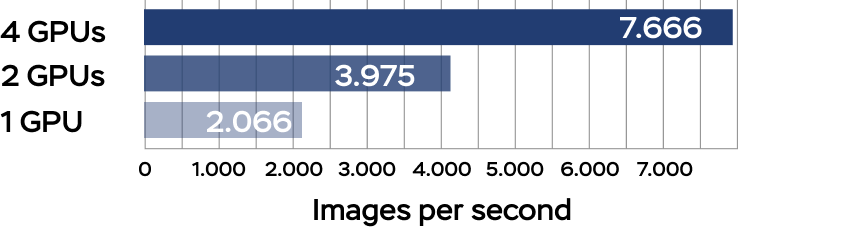
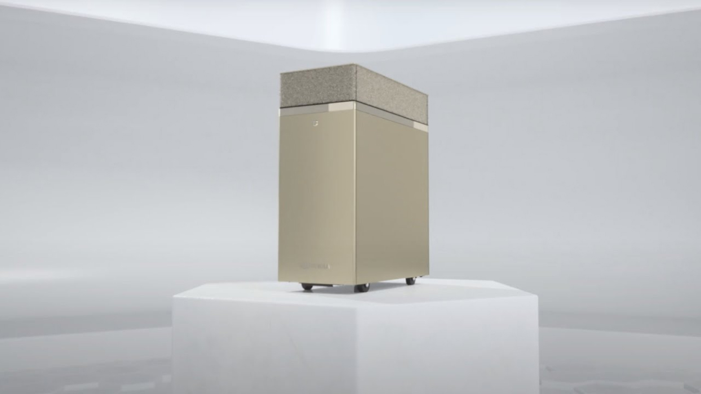

ДАТА-ЦЕНТР ДЛЯ ИИ "ИЗ КОРОБКИ"
Специалисты по data science работают с инновационными технологиями, но им зачастую приходится искать доступные вычислительные циклы для завершения проектов. Необходим отдельный ресурс, который можно подключить в любом месте и обеспечить максимальную производительность одновременной работы нескольким пользователями из любой точки. NVIDIA DGX Station™ A100 обеспечивает возможности супервычислений для разработки ИИ для специалистов по data science, предлагая технологию дата-центра без дата-центра или дополнительной инфраструктуры. Высокая производительность, полностью оптимизированный стек по и прямой доступ к экспертам NVIDIA DGX позволят извлекать информацию из данных быстрее.
Производительность
дата-центра в любом месте
Супервычисления ИИ для
специалистов по data Science
С помощью DGX Station A100 организации могут предоставить нескольким пользователям централизованный ресурс ИИ для всех рабочих задач: обучение, инференс, анализ данных. Начав решать эти задачи на DGX Station A100, впоследствии их можно легко перенести в инфраструктуру на базе NVIDIA DGX™ и других систем, сертифицированными NVIDIA. А с помощью Multi-Instance GPU (MIG) можно выделить до 28 отдельных GPU-устройств для отдельных пользователей и задач.
Производительность, как у
дата-центра, без дата-центра
DGX Station A100 — это система ИИ с производительностью на уровне сервера, которая не требует питания и охлаждения дата-центра. Она включает четыре GPU NVIDIA A100 с тензорными ядрами, CPU с производительностью, как у сервера, сверхбыстрые диски NVMe и передовые шины PCIe Gen4, а также удаленное управление, чтобы вы могли управлять ей как сервером.
ИИ-устройство для
работы в любом месте
DGX Station A100 разработана для современных динамичных групп специалистов по data science, работающих в офисах, лабораториях, исследовательских центрах или даже из дома и не требует сложной установки или обширной IT-инфраструктуры. Просто подключите его к любой стандартной розетке, чтобы за считанные минуты запустить устройство и начать работу из любой точки.
Больше модели,
быстрее ответы
NVIDIA DGX Station A100 — единственная в мире офисная система с четырьмя полностью взаимосвязанными и совместимыми с MIG GPU NVIDIA A100, использующая NVIDIA® NVLink® для выполнения параллельных заданий и работы нескольких пользователей без влияния на производительность системы. Обучайте большие модели с помощью полностью оптимизированного под GPU программного стека и до 320 ГБ памяти GPU.
Обучение ИИ
Наборы данных становятся все более объемными и сложными, так как системы разговорного ИИ, рекомендаций и компьютерного зрения и другие сервисы все чаще используются в различных отраслях. NVIDIA DGX Station A100, которая поставляется со встроенным программным стеком, разработана для обеспечения самого быстрого обучения сложных моделей ИИ по сравнению с рабочими станциями на базе PCIe.
Инференс ИИ
Обычно инференс разворачивается в дата-центре, поскольку он использует все доступные вычислительные ресурсы и требует гибкой, эластичной инфраструктуры, способной к масштабированию. NVIDIA DGX Station A100 идеально подходит для тестирования производительности инференса и результатов перед развертыванием в дата-центре благодаря таким интегрированным технологиям, как MIG, ускоряющими инференс и обеспечивающими высочайшую пропускную способность и отклика в реальном времени, что необходимо для успешного функционирования ИИ-приложений.
Анализ данных
Каждый день компании создают и собирают беспрецедентные объемы данных. Этот огромный объем информации может стать упущенной возможностью для тех, кто не использует аналитику с GPU-ускорением. Чем больше данных, тем больше вы сможете узнать. С помощью NVIDIA DGX Station A100 специалистов по data science могут извлекать информацию из данных быстрее, чем когда-либо.

Высокопроизводительные вычисления
Высокопроизводительные вычисления (HPC) — один из самых важных инструментов, которые стимулируют развитие науки. Оптимизируя более 700 приложений в разных областях, GPU NVIDIA являются двигателем современного HPC дата-центра. Оснащенная четырьмя GPU NVIDIA A100 с тензорными ядрами, DGX Station A100 является идеальной системой для разработчиков, тестирующих научных нагрузок перед развертыванием на HPC кластерах, позволяя им обеспечить отличную производительность в офисе или из дома.
УСКОРЯЙТЕ ИТЕРАЦИИ И СВОЙ ПУТЬ К ИННОВАЦИЯМ
Высокоэффективное обучение алгоритмов повышает продуктивность работы. А это значит, что вы можете быстрее принимать решения и выводить продукты на рынок.
Обучение
BERT предтренировочная фаза 1
Более чем в 3 раза быстрее
DGX Station A100 320 Гбайт; размер пакета = 64; смешанная точность; с AMP; реальные данные; длина последовательности = 128
Инференс
Инференс BERT
Более чем в 4 раза быстрее
DGX Station A100 320 Гбайт; размер пакета = 256; точность INT8; синтетические данные; длина последовательности = 128, cuDNN 8.0.4
Масштабируемость для
систем MULTI-GPU
Обучение ResNet-50 V 1.5
Линейная масштабируемость

DGX Station A100 320GB; размер пакета = 192; смешанная точность; реальные данные; Версия cuDNN = 8.0.4; Версия NCCL = 2.7.8; контейнер NGC MXNet 20,10
ПЕРЕДОВЫЕ КОМПОНЕНТЫ СИСТЕМЫ DGX STATION A100

MGH и BWH используют ИИ для повышения эффективности работы радиологов
Массачусетская больница общего профиля (MGH) и центр клинического анализа данных Бригам и женской больницы (BWH) используют DGX Station для питания генеративно-состязательных сетей (GAN), которые создают синтетические изображения МРТ мозга, что позволяет команде тренировать свою нейронную сеть со значительно меньшим количеством данных. DGX Station выступает в качестве специализированного ресурса ИИ, чтобы радиологи могли продолжать свои проекты.
SBB использует ИИ для защиты целостности железной дороги
Федеральные железные дороги Швейцарии (SBB) имеют в своем распоряжении 15 000 поездов, которые совершают 1,2 миллиона поездок в день. Мощность DGX Station позволила более точно и в автоматическом режиме обнаруживать неисправности на железнодорожных путях и сократить время на проведение проверок. Оптимизированное ПО для ИИ в DGX Station позволяет инженерам сосредоточиться на сборе нужных данных, а не на тестировании и настройке компонентов.
Avitas Systems использует ИИ для лучшей инспекции
Avitas Systems использует роботов с ИИ, которые с невероятной точностью обнаруживают коррозию, утечки и другие незаметные для человеческого глаза дефекты и отправляются в места, непригодные для человека. Они используют глубокие нейронные сети, разработанные на серверах NVIDIA DGX в центре обработки данных и легко передающиеся в NVIDIA DGX Station в полевых условиях для инференса данных, находящимся в непосредственной близости от места их создания.